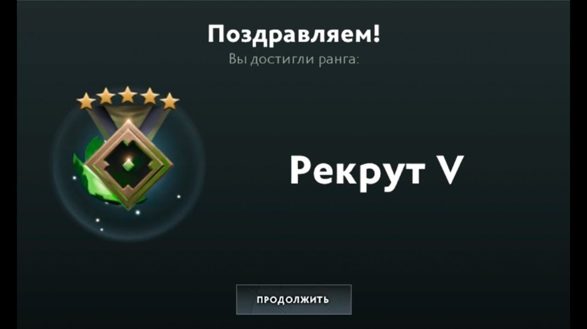
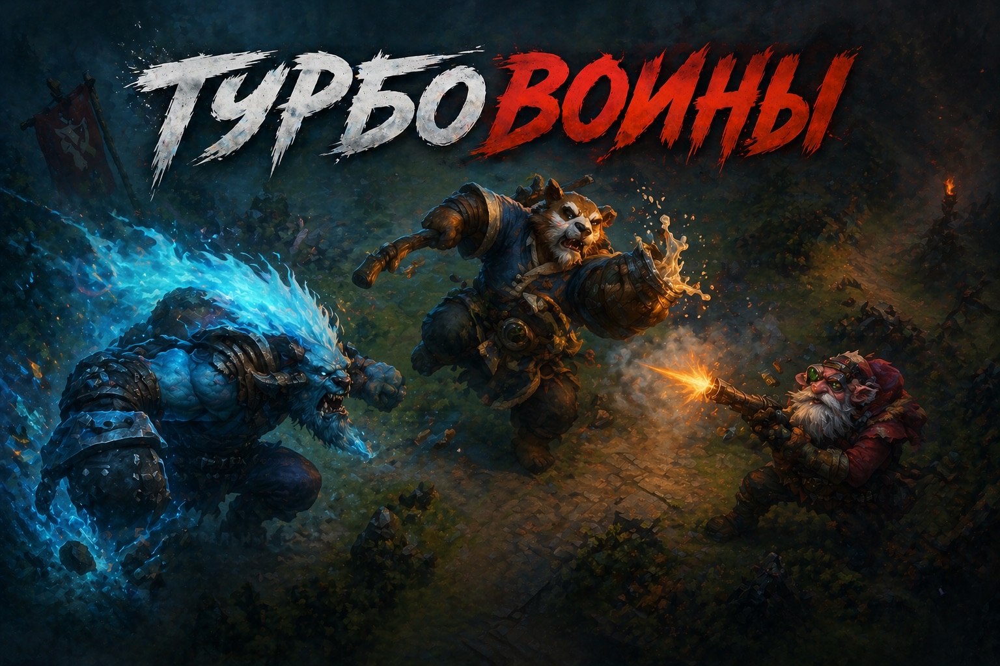

Трубовоины доты 2
если вы достигли ранга:

то официально можете считать себя трубовоином
НЕМНОГО О ТУРБО:
- один из режимов компьютерной игры Dota2
- Турбо-потому что скорость игры ускорена в 2 раза
- открывается в самом начале игры
- Игроки турбо(турбовоины) отличаются полным отсутсвием инеллекта

Особенности турбо:
- имеет свое отдельное сообщество
- имеется свой свод законов(правил) обязательных к выполнению при игре в турбо
ПРАВИЛА ТУРБО